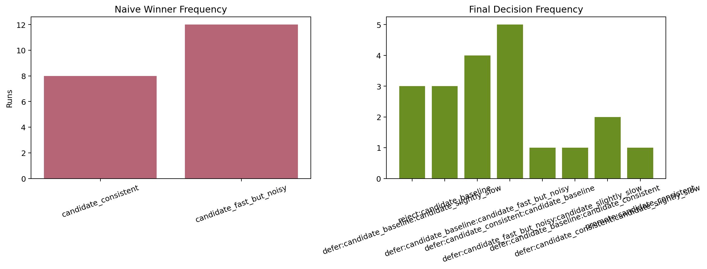
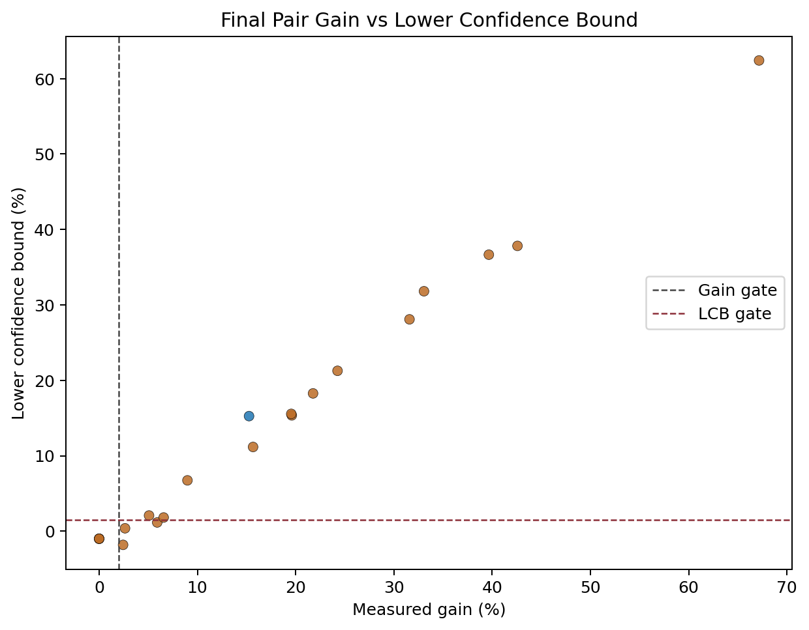
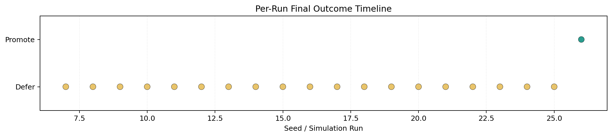

Noise-Aware Benchmark Simulation Summary
CPU-backed repeated-session simulation comparing naive raw-median selection against contamination-aware finalist reruns and promotion gating.
Plots



| runs | 20 |
|---|---|
| true_winner | candidate_consistent |
| naive_matches_true | 8 |
| naive_false_winners | 12 |
| final_promotes_true | 1 |
| final_false_promotions | 0 |
| defer_count | 16 |
| reject_count | 3 |
| promote_count | 1 |
| decision_disagreement_count | 20 |
| avg_final_winner_contamination_rate | 0.7075 |
| avg_final_lcb_pct | 15.0502 |
Per-Run Results
| Seed | Naive Winner | Decision | Final Winner | Final Loser | Gain % | LCB % |
|---|---|---|---|---|---|---|
| 7 | candidate_consistent | defer:candidate_baseline:candidate_slightly_slow | candidate_baseline | candidate_slightly_slow | 67.159 | 62.409 |
| 8 | candidate_consistent | reject:candidate_baseline | candidate_baseline | candidate_fast_but_noisy | 0.000 | -1.000 |
| 9 | candidate_consistent | defer:candidate_baseline:candidate_fast_but_noisy | candidate_baseline | candidate_fast_but_noisy | 42.573 | 37.823 |
| 10 | candidate_fast_but_noisy | defer:candidate_baseline:candidate_fast_but_noisy | candidate_baseline | candidate_fast_but_noisy | 21.768 | 18.268 |
| 11 | candidate_fast_but_noisy | defer:candidate_consistent:candidate_baseline | candidate_consistent | candidate_baseline | 2.437 | -1.813 |
| 12 | candidate_fast_but_noisy | defer:candidate_consistent:candidate_baseline | candidate_consistent | candidate_baseline | 5.910 | 1.160 |
| 13 | candidate_fast_but_noisy | reject:candidate_baseline | candidate_baseline | candidate_fast_but_noisy | 0.000 | -1.000 |
| 14 | candidate_consistent | defer:candidate_fast_but_noisy:candidate_slightly_slow | candidate_fast_but_noisy | candidate_slightly_slow | 15.664 | 11.164 |
| 15 | candidate_fast_but_noisy | reject:candidate_baseline | candidate_baseline | candidate_fast_but_noisy | 0.000 | -1.000 |
| 16 | candidate_fast_but_noisy | defer:candidate_baseline:candidate_fast_but_noisy | candidate_baseline | candidate_fast_but_noisy | 19.607 | 15.357 |
| 17 | candidate_consistent | defer:candidate_consistent:candidate_baseline | candidate_consistent | candidate_baseline | 6.565 | 1.815 |
| 18 | candidate_fast_but_noisy | defer:candidate_baseline:candidate_fast_but_noisy | candidate_baseline | candidate_fast_but_noisy | 19.551 | 15.551 |
| 19 | candidate_consistent | defer:candidate_baseline:candidate_consistent | candidate_baseline | candidate_consistent | 8.987 | 6.737 |
| 20 | candidate_consistent | defer:candidate_consistent:candidate_slightly_slow | candidate_consistent | candidate_slightly_slow | 31.584 | 28.084 |
| 21 | candidate_fast_but_noisy | defer:candidate_baseline:candidate_slightly_slow | candidate_baseline | candidate_slightly_slow | 39.659 | 36.659 |
| 22 | candidate_consistent | defer:candidate_consistent:candidate_baseline | candidate_consistent | candidate_baseline | 2.635 | 0.385 |
| 23 | candidate_fast_but_noisy | defer:candidate_consistent:candidate_baseline | candidate_consistent | candidate_baseline | 5.079 | 2.079 |
| 24 | candidate_fast_but_noisy | defer:candidate_baseline:candidate_slightly_slow | candidate_baseline | candidate_slightly_slow | 24.261 | 21.261 |
| 25 | candidate_fast_but_noisy | defer:candidate_consistent:candidate_slightly_slow | candidate_consistent | candidate_slightly_slow | 33.059 | 31.809 |
| 26 | candidate_fast_but_noisy | promote:candidate_consistent | candidate_consistent | candidate_baseline | 15.255 | 15.255 |